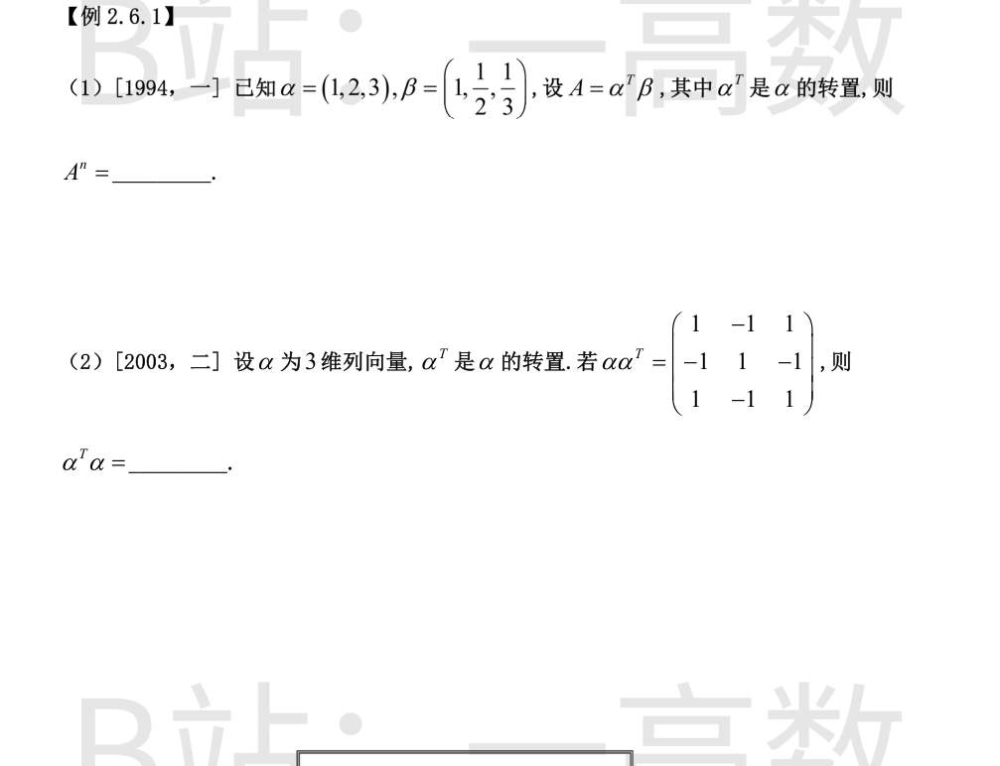
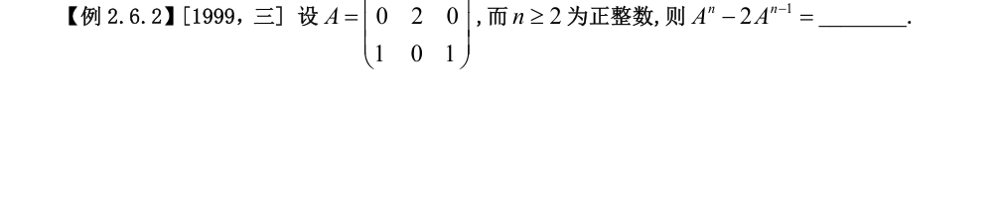
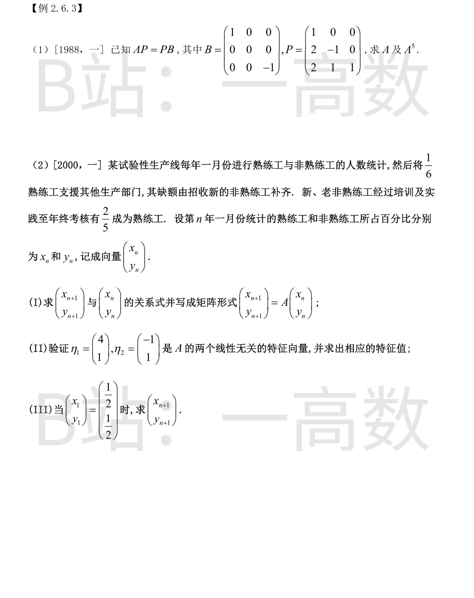

A=αᵀβ 为 3×3 矩阵, 而 βαᵀ 是一个数:
$$\beta\alpha^T=1\cdot1+\tfrac12\cdot2+\tfrac13\cdot3=1+1+1=3.$$
由矩阵乘法结合律,
$$A^n=(\alpha^T\beta)^n=\alpha^T(\beta\alpha^T)^{n-1}\beta=3^{n-1}\alpha^T\beta=3^{n-1}A.$$
而
$$A=\begin{pmatrix}1&\tfrac12&\tfrac13\\2&1&\tfrac23\\3&\tfrac32&1\end{pmatrix},$$
故
$$A^n=3^{n-1}\begin{pmatrix}1&\tfrac12&\tfrac13\\2&1&\tfrac23\\3&\tfrac32&1\end{pmatrix}.$$
αᵀα 是 1×1 的数, 且等于 ααᵀ 的迹:
$$\alpha^T\alpha=\operatorname{tr}(\alpha\alpha^T)=1+1+1=3.$$
(即 α 各分量平方之和, 每个主对角元恰为一个分量的平方。)

(注: 切片图上缘截去了矩阵首行 (1,0,1), 按 1999 年数三原题补全, A 为对称矩阵)
$$A=\begin{pmatrix}1&0&1\\0&2&0\\1&0&1\end{pmatrix}.$$
直接计算:
$$A^2=\begin{pmatrix}2&0&2\\0&4&0\\2&0&2\end{pmatrix}=2A.$$
由归纳法得 $A^n=2^{n-1}A\ (n\ge1)$。于是当 $n\ge2$ 时
$$A^n-2A^{n-1}=2^{n-1}A-2\cdot2^{n-2}A=O.$$

$|P|=\begin{vmatrix}1&0&0\\2&-1&0\\2&1&1\end{vmatrix}=-1\ne0$, 可逆。对 $(P|E)$ 作初等行变换求逆:
$$P^{-1}=\begin{pmatrix}1&0&0\\2&-1&0\\-4&1&1\end{pmatrix}.$$
由 $AP=PB$ 得 $A=PBP^{-1}$:
$$PB=\begin{pmatrix}1&0&0\\2&-1&0\\2&1&1\end{pmatrix}\begin{pmatrix}1&0&0\\0&0&0\\0&0&-1\end{pmatrix}=\begin{pmatrix}1&0&0\\2&0&0\\2&0&-1\end{pmatrix},$$
$$A=PBP^{-1}=\begin{pmatrix}1&0&0\\2&0&0\\2&0&-1\end{pmatrix}\begin{pmatrix}1&0&0\\2&-1&0\\-4&1&1\end{pmatrix}=\begin{pmatrix}1&0&0\\2&0&0\\6&-1&-1\end{pmatrix}.$$
B 为对角阵, $B^5=\operatorname{diag}(1^5,0^5,(-1)^5)=\operatorname{diag}(1,0,-1)=B$, 故
$$A^5=PB^5P^{-1}=PBP^{-1}=A.$$
(I) 熟练工留 $\frac56x_n$; 非熟练工补缺额后为 $\frac{x_n}{6}+y_n$, 其中 $\frac25$ 升为熟练工、$\frac35$ 仍为非熟练工:
$$x_{n+1}=\frac56x_n+\frac25\Big(\frac{x_n}{6}+y_n\Big)=\frac9{10}x_n+\frac25y_n,\qquad
y_{n+1}=\frac35\Big(\frac{x_n}{6}+y_n\Big)=\frac1{10}x_n+\frac35y_n,$$
$$\begin{pmatrix}x_{n+1}\\y_{n+1}\end{pmatrix}=A\begin{pmatrix}x_n\\y_n\end{pmatrix},\qquad
A=\begin{pmatrix}9/10&2/5\\[2pt]1/10&3/5\end{pmatrix}.$$
(II)
$$A\eta_1=\Big(\frac9{10}\cdot4+\frac25\cdot1,\ \frac1{10}\cdot4+\frac35\cdot1\Big)^{T}=(4,1)^T=\eta_1\ \Rightarrow\ \lambda_1=1;$$
$$A\eta_2=\Big(-\frac9{10}+\frac25,\ -\frac1{10}+\frac35\Big)^{T}=\Big(-\frac12,\frac12\Big)^T=\frac12\eta_2\ \Rightarrow\ \lambda_2=\frac12.$$
不同特征值对应的特征向量线性无关, 故 $\eta_1,\eta_2$ 线性无关。
(III) 用 $\eta_1,\eta_2$ 表示 $(1/2,1/2)^T=c_1\eta_1+c_2\eta_2$:
$$4c_1-c_2=\frac12,\quad c_1+c_2=\frac12\ \Rightarrow\ c_1=\frac15,\ c_2=\frac3{10}.$$
于是
$$\begin{pmatrix}x_{n+1}\\y_{n+1}\end{pmatrix}=A^n\begin{pmatrix}1/2\\1/2\end{pmatrix}
=\frac15\cdot1^n\,\eta_1+\frac3{10}\Big(\frac12\Big)^n\eta_2
=\begin{pmatrix}\dfrac45-\dfrac{3}{10}\cdot\dfrac{1}{2^n}\\[6pt]\dfrac15+\dfrac{3}{10}\cdot\dfrac{1}{2^n}\end{pmatrix}.$$